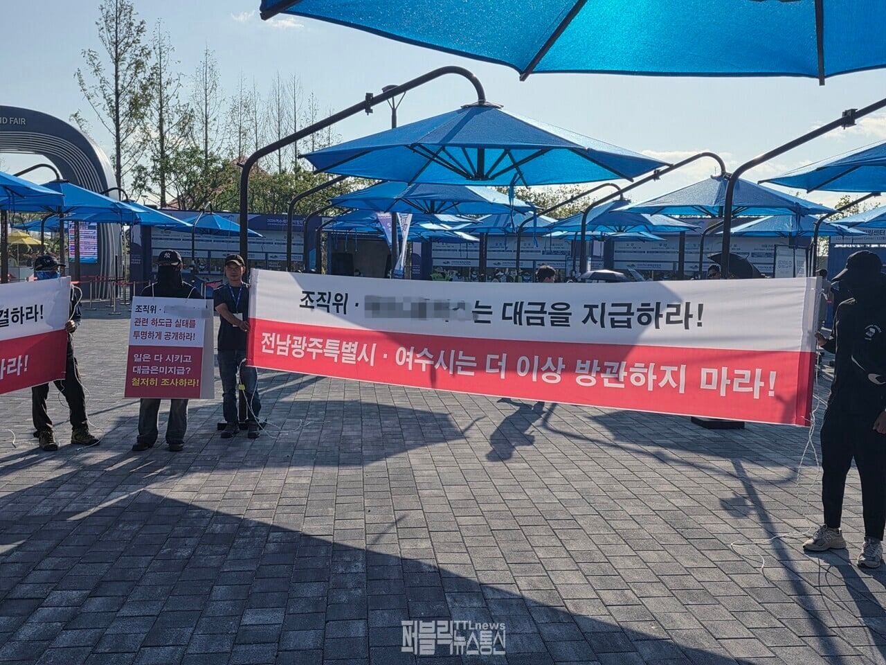

https://www.ttlnews.com/news/articleView.html?idxno=3140555

https://www.ttlnews.com/news/articleView.html?idxno=3140555
븅신그라운드
저지역은 대체 ㅅㅂㅋㅋ
가지가지한다 진짜...
대단들 하다~
저지역만 분리 독립시켜♡
여~수
심지어 안줬어? 뭔ㅋㅋㅋㅋ
여수가 고향인 사람인데 저지역 전라도 그런 댓글 볼 때마다 내가 대한민국 사람인지 외국 사람인지 헷갈린다. 지자체가 헤쳐먹으려고 염병 똥싸는 꼴 보니, 솔직히 우습고 망하기를 고대하는데. 통으로 싸잡아서 지역 갈라치기하면 우리 나라에 뭐가 남겠냐? 분열과 망조만 남기를 바라는건가 싶음. 어딜가나 헤쳐먹는 놈들이 만연한데 너네들이 좋아하는 '그 지역'이라서가 아니라 건수를 잡아서 이런 일이 발생했다 생각함. 그리고 이렇게 돌아가게끔 만든 지역 공무원들의 태만함이 문제라고 생각함. 책임의식이라고는 1도 없는 쓰레기같은 족속들.
ㅋㅋㅋㅋ여수를 비판해야지 전라도 전체를 비판하니까 일베충 소리 듣는거지